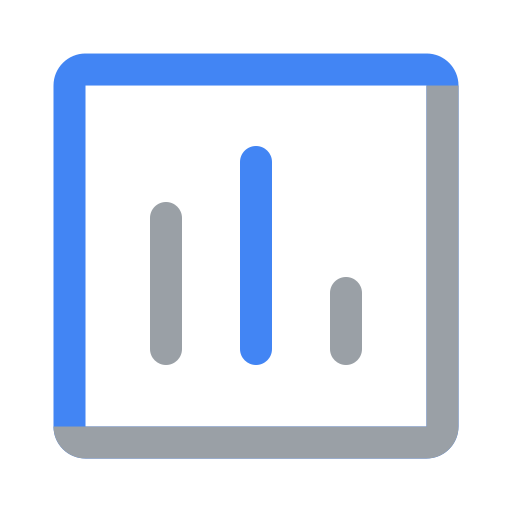

Agentic Transformation for Global Supply Chains
One executive briefing grounded in verified 2025–2026 benchmarks. Everyone starts together, the story spans all 6 Supply Chain Operations Reference (SCOR) pillars, and every journey converges on our 60-persona chessboard and Google Cloud architecture.
Everyone starts here
The capital & disruption thesis across every industry.
Executive Overview
Why major disruptions every 3.7 years erase 45% of annual EBITDA (McKinsey), and how 60 specialized agents restore flow.
All 6 SCOR Pillars
Every sub-pillar mapped to a persona, an agent, and a measurable ROI.
Everyone converges here
The 60-role chessboard, then how we build, run, govern and prove it.
From one alert to coordinated flow
World Economic Forum (2026): -62% disruption response cycle (11 days → 4 days).
Google Cloud Architecture
5-lane governed topology with live request tracing.
Interactive
Where people meet the agent
Gemini Enterprise, Cockpit, SAP/WMS & background flows.
InteractiveModel choice & OR-Tools
Gemini 3.1 Pro reasons; deterministic solvers compute.
Governance & MCP
Identity, Model Armor, VPC-SC & human approval gates.
Unilever (Feb 2026)
104-week ML forecast & 40+ plant digital twins.
VerifiedGE Appliances & Home Depot
800+ Gemini agents & 2,300+ stores grounded.
Verified
Gartner, McKinsey & BCG
Primary 2025–2026 citations with direct links.
100 days to proof of value
Start with 1 high-variance pillar, then scale.